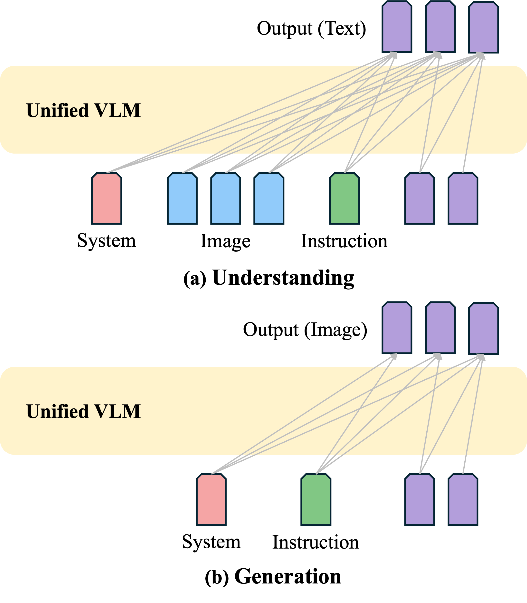
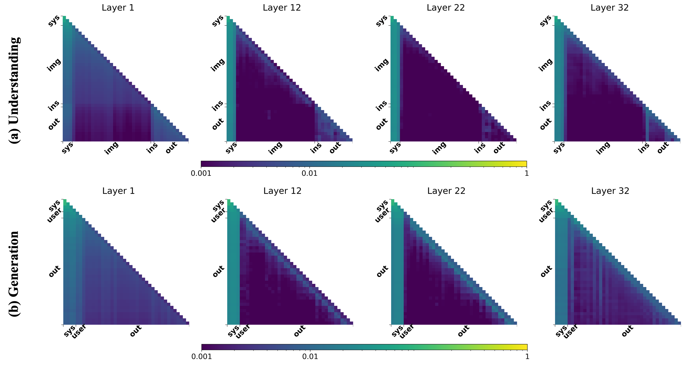
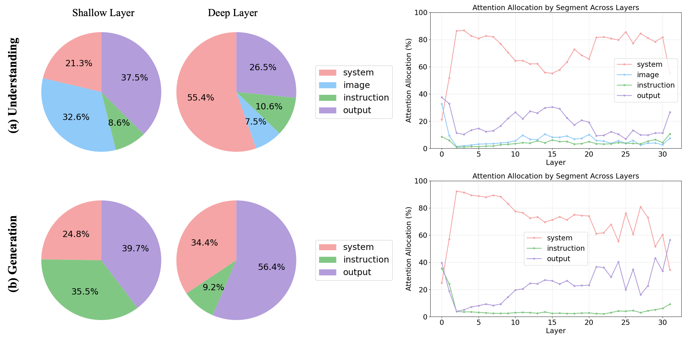
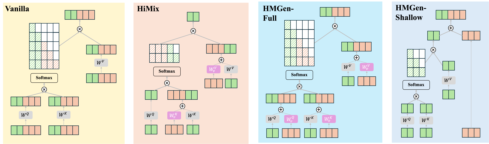
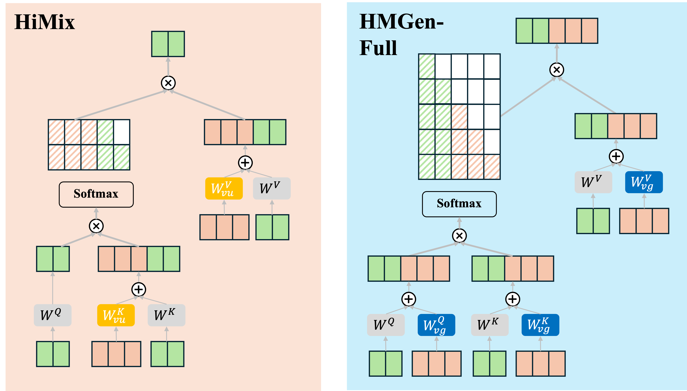

Unified vision-language models (VLMs) integrate visual understanding and visual generation within a single autoregressive backbone, but their joint training is computationally expensive and largely overlooked from an efficiency perspective. In this work, we study the feasibility and limits of token-reduction-based acceleration for unified VLM training. Through a systematic analysis of layerwise attention allocation, we uncover a fundamental asymmetry: visual understanding exhibits substantial late-layer visual redundancy, whereas visual generation maintains persistent dependence on image tokens across depth. Guided by this observation, we design task-specific accelerators that selectively reduce image-token computation for each objective. While these methods achieve significant efficiency gains in isolated settings, we observe a consistent synergy loss under unified training: task-specific token dropping necessitates divergent parameter pathways and eliminates the mutual performance gains typically observed in joint optimization. Our findings suggest that efficient unified modeling requires preserving shared cross-task structures, highlighting the need for synergy-aware acceleration strategies.
Unified vision-language models (VLMs) jointly learn visual understanding (e.g., text prediction conditioned on images) and visual generation (autoregressively predicting image tokens) with a single next-token objective. However, joint training is expensive, and token-reduction methods that work for inference-time or single-task settings do not directly translate to training-time efficiency. We investigate whether token-reduction acceleration can be extended to unified training and what its fundamental limits are.

We make four main contributions:
• Unified redundancy analysis: characterize an asymmetry in token usage across depth for understanding vs generation.
• Task-specific accelerators: propose training-time token reduction methods for understanding and generation separately.
• Synergy loss discovery: show that combining task-specific token reduction under unified training can collapse joint performance.
• Lessons for unified acceleration: effective strategies must preserve shared cross-task structures rather than composing isolated optimizations.
Through attention-allocation analysis, we uncover a depth-dependent asymmetry: late-layer visual tokens are substantially redundant for visual understanding, while visual generation maintains persistent dependence on image tokens across depth. This observation motivates task-aware accelerators that reduce image-token computation in a way that matches each objective's token-utilization pattern.


For understanding, we reduce image-token computation by removing image tokens from the query stream while retaining them in key/value projections. This eliminates expensive image-to-image quadratic attention, while keeping the necessary text-to-image interactions.
For generation, we must preserve autoregressive structure: predicted image tokens need to remain valid queries for subsequent image-token prediction. HMGen therefore skips image-token attention/FFN updates only in a set of designated "shallow" middle layers, forwarding image-token hidden states without participation in updates. Additionally, HMGen introduces separate projection parameters for image vs text tokens in full layers to stabilize hierarchical conditioning.

| Method | GQA | MME-C | MME-P | POPE-A | POPE-P | POPE-R | POPE-F1 | SeedBench-Img | FLOPs |
|---|---|---|---|---|---|---|---|---|---|
| VILA-U (U-only) | 52.86 | 258.21 | 1054.88 | 81.30 | 84.67 | 74.76 | 79.40 | 46.05 | 1× |
| HiMix (U-only) | 49.92 | 224.64 | 983.30 | 78.56 | 78.03 | 79.49 | 78.75 | 40.88 | 0.24× |
| Method | #Shallow Layers | MJHQ-30K | FLOPs |
|---|---|---|---|
| VILA-U (G-only) | 0 | 17.45 | 1× |
| HMGen | 3 | 12.16 | 0.85× |
| HMGen | 5 | 12.55 | 0.75× |
When task-specific token reduction is applied under unified training, we observe a consistent synergy loss: unified training's mutual performance gains disappear, and both understanding and generation can collapse compared to the unified baseline. The central issue is that token dropping changes which tokens participate in attention, which parameters receive gradients, and thus fragments the shared cross-task optimization dynamics.
| Method | GQA | MME-C | MME-P | POPE-F1 | SeedBench-Img | MJHQ | FLOPs |
|---|---|---|---|---|---|---|---|
| VILA-U (U-only) | 52.86 | 258.21 | 1054.88 | 79.40 | 46.05 | – | 1× |
| VILA-U (G-only) | – | – | – | – | – | 17.45 | 1× |
| VILA-U (Unified) | 56.00 | 250.00 | 1135.91 | 82.30 | 47.88 | 15.78 | 1× |
| HiMix (U-only) | 49.92 | 224.64 | 983.30 | 78.75 | 40.88 | – | 0.24× |
| HMGen (G-only) | – | – | – | – | – | 12.16 | 0.85× |
| HiMix–HMGen (Share All) | 33.00 | 233.21 | 662.26 | 67.59 | 31.38 | 12.53 | 0.56× |
| HiMix–HMGen (Share Partial) | 47.05 | 255.00 | 847.82 | 76.58 | 34.50 | 14.54 | 0.55× |
To mitigate synergy breakage, we introduce a separate image projection strategy: instead of fully sharing image-related projection parameters, we partially decouple them by decomposing image projection matrices into shared and image-specific components. This partially restores shared pathways while still allowing token participation to differ across tasks.

@inproceedings{chen2026token_reduction_unified_vlm,
title={On the Limits of Token Reduction for Efficient Unified Vision Language Training},
author={Chen, Siyi and Zhuang, Weiming and Li, Jingtao and Lv, Lingjuan},
booktitle={CVPRW},
year={2026}
}